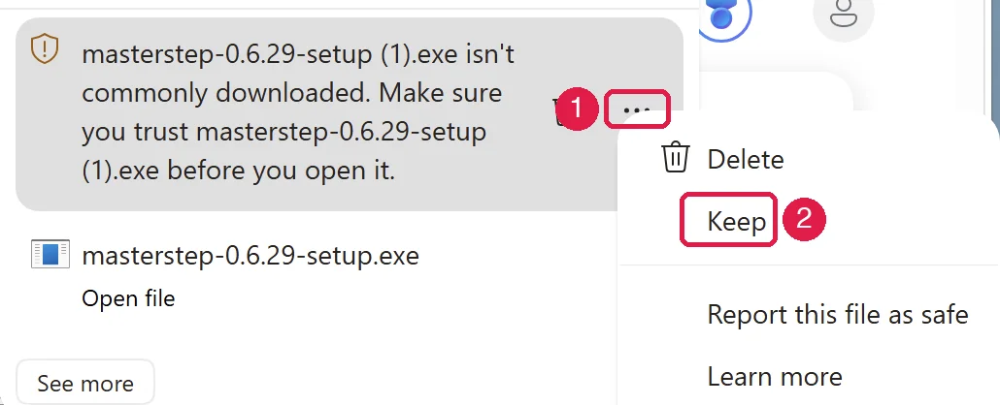
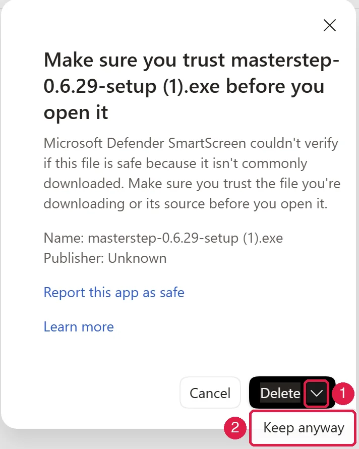
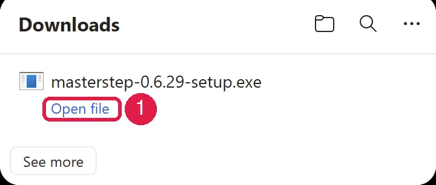
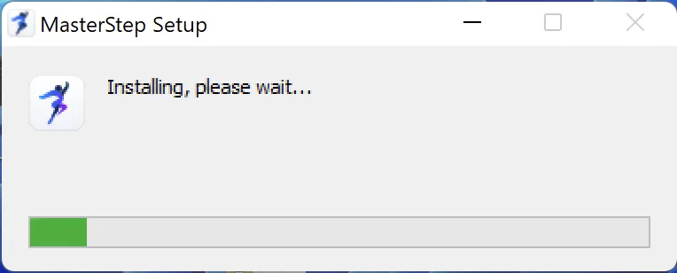
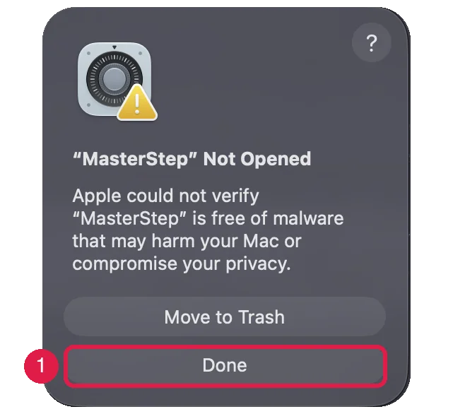
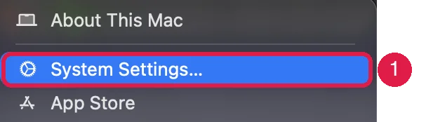
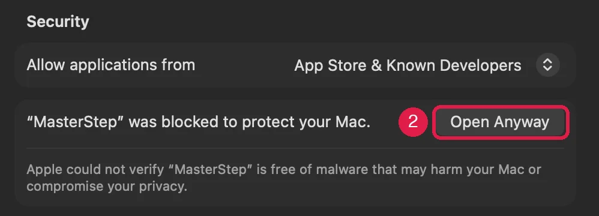
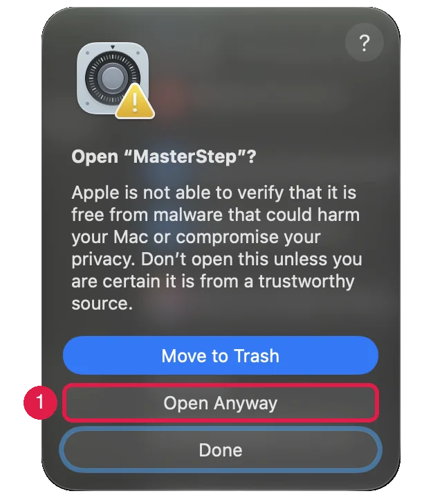

התקנת MasterStep
מדריך קצר להתקנה ולפתיחה הראשונה.
גרסת הבטא עדיין לא חתומה, ולכן בפתיחה הראשונה Windows או macOS יציגו אזהרה. זה צפוי, ועושים את זה רק פעם אחת.
את קישור ההורדה ואת מפתח הרישיון קיבלתם במייל ההזמנה.
Windows
אם Edge כותב שהקובץ לא מוכר (isn't commonly downloaded), עמדו עם העכבר על הקובץ, לחצו על שלוש הנקודות ובחרו Keep.

בחלון שנפתח לחצו על החץ שליד Delete ובחרו Keep anyway.

פתחו את הקובץ. ב־Edge לוחצים על Open file.

אם מופיע חלון כחול Windows protected your PC, לחצו על More info.
מופיע הכפתור Run anyway. לחצו עליו.
ההתקנה רצה לבד, בלי שאלות, ולוקחת פחות מדקה. בסופה MasterStep נפתח.

אין כפתור Run anyway? השיבו למייל ההזמנה ונעזור.
Mac
פתחו את קובץ ה־DMG וגררו את MasterStep לתיקייה Applications.
פתחו את MasterStep מהתיקייה Applications. macOS יציג הודעה שהוא לא יכול לאמת את האפליקציה. לחצו על Done. לא לוחצים על Move to Trash.

בתפריט Apple בחרו System Settings…, ואז Privacy & Security. גללו למטה, ובקטע Security לחצו על Open Anyway.


בחלון שנפתח לחצו שוב על Open Anyway והקלידו את הסיסמה של המחשב. מעכשיו MasterStep נפתח כרגיל.

הכפתור Open Anyway מופיע רק בערך שעה אחרי שניסיתם לפתוח את האפליקציה. לא רואים אותו? פתחו את MasterStep שוב וחזרו להגדרות.
macOS 14 או ישן יותר
בתיקייה Applications, לחצו על MasterStep עם הכפתור הימני (או Control ולחיצה), בחרו Open, ואז לחצו שוב על Open.
בפתיחה הראשונה
- MasterStep מבקש את מפתח הרישיון. העתיקו אותו מהמייל, הדביקו ולחצו על הפעלה. צריך חיבור לאינטרנט.
- רוצים לספר לנו משהו? באפליקציה: הגדרות ← אודות ← שליחת משוב.